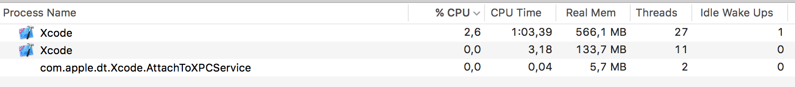

Xcode 8 Source Editor Extensions
This last WWDC Apple announced that they will be providing us developers with «official» and «legal» ways to create Xcode plugins.
There are many posts covering this and I won’t center in the «how to» but rather in one single tip that prevented me from going crazy while developing Localizer.
The basics
Apple‘s documentation on Xcode 8 Source Editor Extensions is pretty «nice» for an upcoming, yet to be released, feature.
There’s also session 414 from WWDC 16 that covers all the details.
Here’s yet another blog post about the topic.
As I said earlier there’s a lot of information about them and there’s no need to duplicate the information but rather to point to the sources.
Big IF
There’s only one thing I consider important enough to «duplicate» here.
It’s covered in this blog post and its related to developing Source Editor Extensions in macOS 10.11.
Xcode won’t even bother loading your extensions unless you run this command:
|
|
And then reboot your computer.
Apparently its related to the XPC Service and El Capitan not expecting it (which might be related to the issue I encountered while playing with extensions).
The issue
I’ve mentioned a couple of times that I found one particular, crazy driving issue while doing Localizer; and this is it:
My extension failed to load every now and then and no matter how many times I tried, cleaned Derived Data, etc the extension simply refused to load.
How do I know this?
Easy, by doing old school «breadcrumbing»… I put this:
|
|
Right in the middle of extensionDidFinishLaunching() which gets called after the extension is loaded.
And there was no sign of the 🎉 most of the times, also, my Localizer entry under Editor menu was grayed out…
I was going to quit after 15 minutes trying to debug/run my extension when I realized something on my Activity Monitor:

This process com.apple.dt.Xcode.AttachToXPCService appears to be the one in charge of attaching the extension to Xcode (?).
Anyways, some times this process doesn’t get properly killed after you finished your debugging session and the next time you try to launch your extension it never gets attached to Xcode and thus your menu item is grayed out and the extension is not loaded.
Simply killing that process will let you keep working on your extension without headaches!
With some luck this will help others trying to create amazing extensions and will prevent some extensions from never reaching us.
TL;DR
Here’s the important bit about all this:
If your extension is not loading and you can’t debug it; kill this process:
com.apple.dt.Xcode.AttachToXPCService
And try again
Thanks @jseravalli for the TL;DR tip 🙇